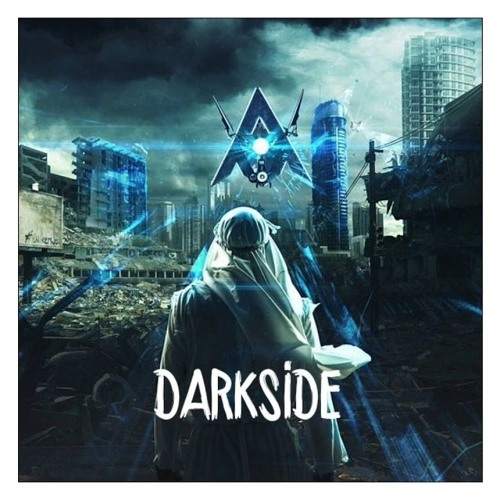
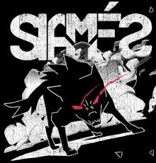

Популярні пісні

Назва: Darkside
"Darkside" від Alan Walker — це електронна пісня з меланхолійним настроєм, яка поєднує в собі потужні ритми та атмосферний вокал. Лірично пісня розповідає про боротьбу зі своїми внутрішніми демонами та пошук підтримки в складні моменти життя. Теми темряви, самотності та свободи звучать через метафори та заклики долати перешкоди, не піддаючись страху.

The Wolf
"The Wolf" від SIAMÉS — це альтернативна рок-пісня з глибоким, емоційним звучанням, що поєднує потужні гітари та енергійний ритм. Лірично пісня розповідає про боротьбу з внутрішніми демонами, самопошук та сильне бажання подолати труднощі. В образі вовка, який символізує як небезпеку, так і силу, виконується метафоричний заклик до відстоювання власної незалежності та боротьби за свободу. Вокал додає пісні інтенсивності, підкреслюючи тему внутрішнього конфлікту.